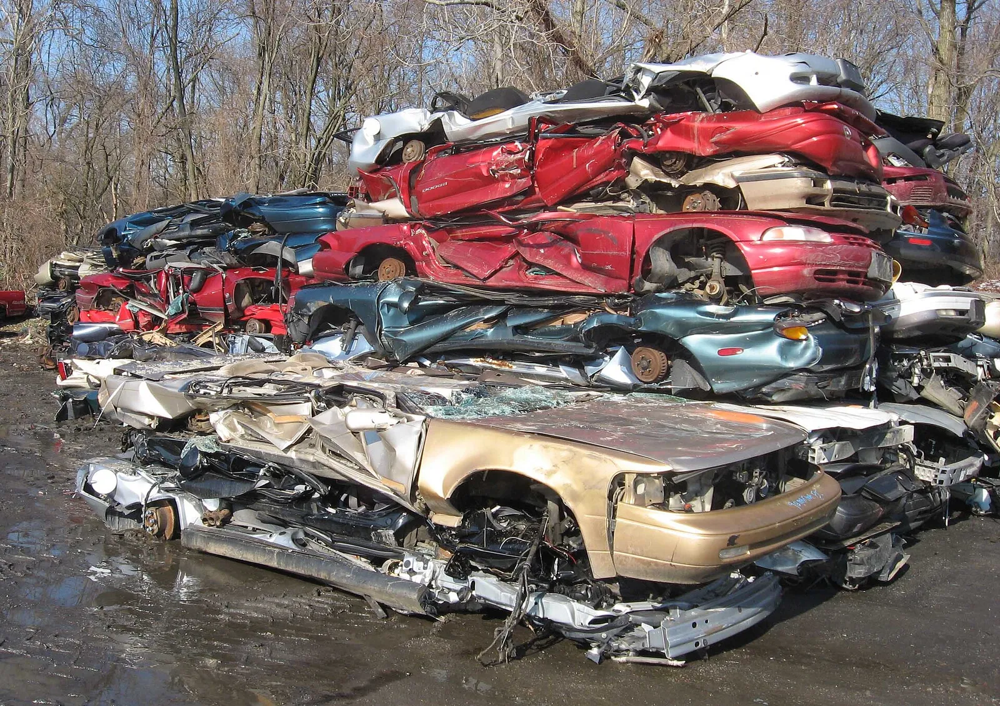
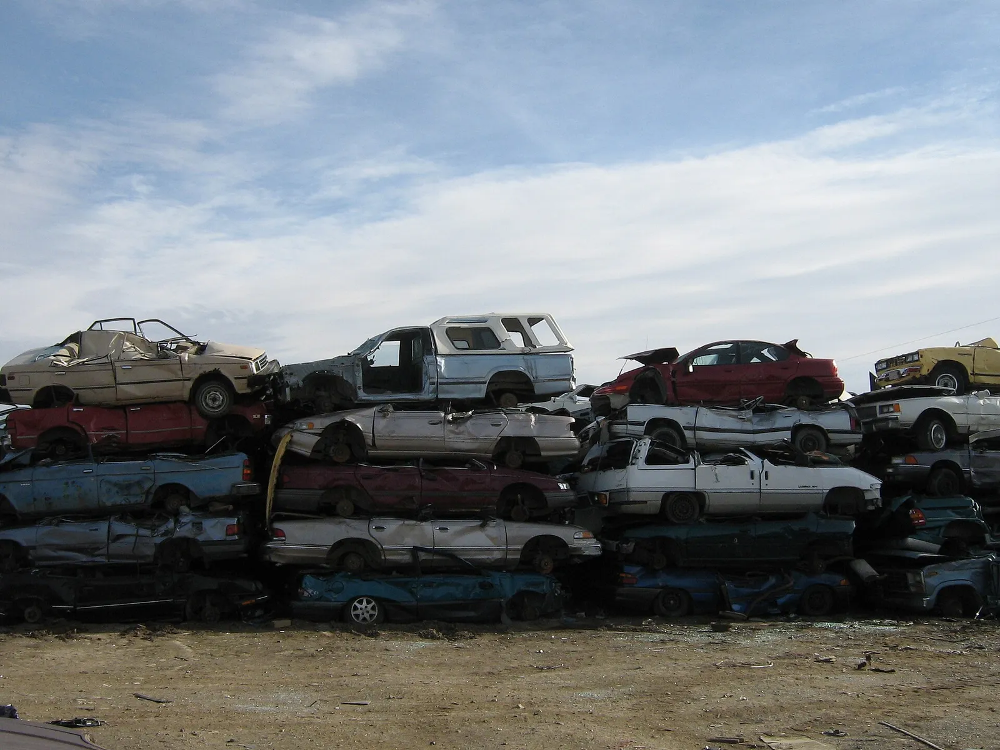
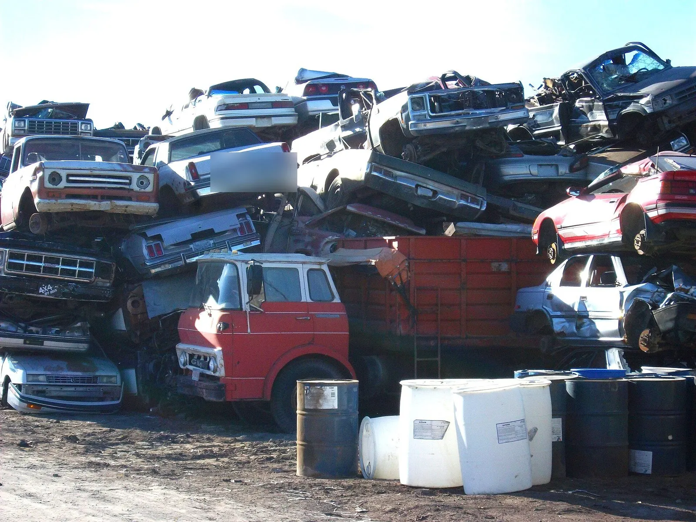
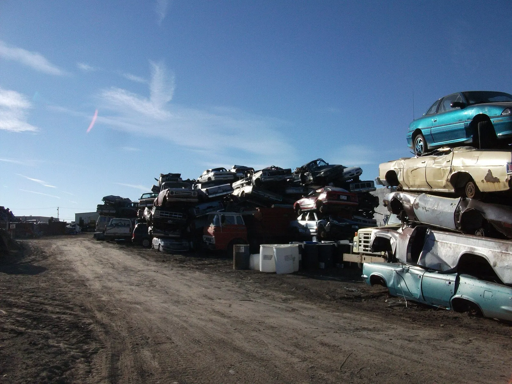
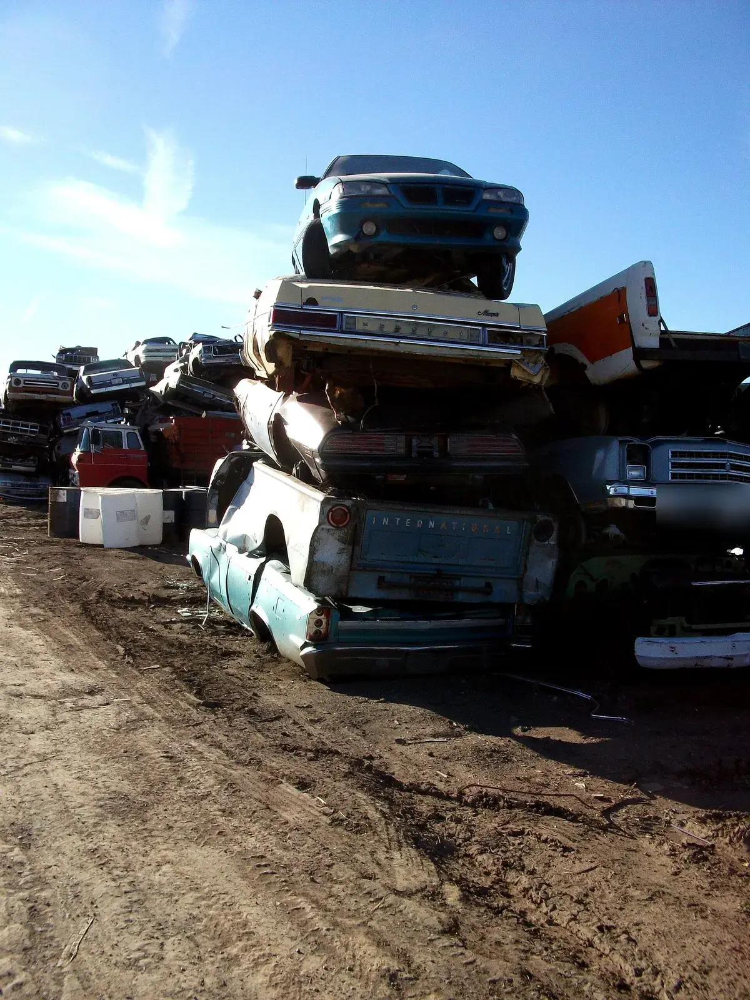
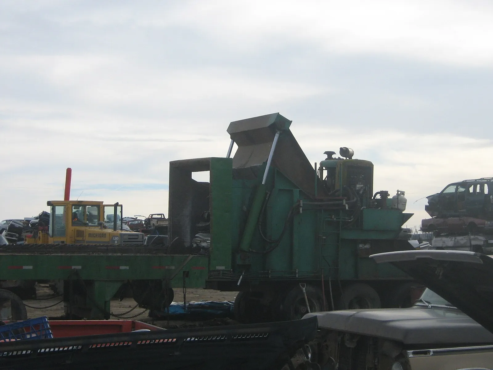

▲ 도로변 중고차 매장. 파일 설명 기준 미국 하와이 마우이섬으로, 한국 매장이 아니다 ⓒ 293.xx.xxx.xx(익명 이용자) / Wikimedia Commons (CC BY-SA 3.0)
"차를 팔았는데 보험료 고지서가 또 왔다." 명의이전만 끝내면 보험도 알아서 정리될 것 같지만, 자동차보험은 계약자가 직접 해지하거나 승계를 신청해야 정리된다. 이 글은 차를 팔거나 폐차·말소할 때 무엇을 어떤 순서로 하고, 환급금이 얼마나 나오는지를 표준약관과 법령 문구로 대조하고 보험료 800,000원이라는 가정에 대입해 계산한 결과다. 확인하지 못한 값은 "확인하지 못함"으로 표시했다.
명의이전 서류·취득세 등 비용은 자동차 명의이전 비용 기사, 갱신 때의 특약 점검은 자동차보험 갱신 할인 특약 기사, 마일리지 환급은 마일리지 특약 환급 기사에서 다뤘다. 이 글은 "해지·환급 절차와 환급금 계산"만 본다.
1. 승계할까 해지할까 — 상황별 판정
표준약관 제48조는 피보험자동차가 양도되면 보험계약의 권리와 의무가 양수인에게 자동으로 넘어가지 않는다고 본다. 보험계약자가 양수인에게 이전하고 싶다는 뜻을 서면 등으로 통지하고 보험회사가 승인해야 하며, 보험회사가 10일 이내에 승인 여부를 통지하지 않으면 승인한 것으로 본다. 승인을 거절당하면 양도 후 사고에는 보험금이 나오지 않는다. 한국 운전자가 실제로 맞닥뜨리는 경우는 대부분 아래 네 가지다.
| 상황 | 보험 처리 | 환급 여부 | 카프리즘 판단 |
|---|---|---|---|
| 개인 간·매매업체에 판다(새 차 없음) | 양도인이 해지, 양수인은 새로 가입 | 미경과분 환급 | 양도·말소 해지는 일할 환급 대상으로 안내하는 보험사가 많음(보험사 확인) |
| 팔고 같은 종류의 다른 차로 교체 | 제49조 교체 승계 신청 | 기존 차 말소·이전등록일부터 승계 승인 전날까지 일할 반환 | 등급·특약을 이어가려면 승계가 유리 |
| 폐차·말소 후 한동안 차를 안 산다 | 해지 | 미경과분 환급 | 3년 안에 재가입 계획이면 등급 부담 작음(추정) |
| 가족에게 양도한다 | 양수인(가족)이 승계 승인 또는 신규 가입 | 승계 시 보험료 차이 정산 | 양수인 연령·경력에 따라 보험료가 달라질 수 있음 |
📍 표준약관 인용 범위와 한계
제48조·제49조·제52조·제54조는 보험개발원 자동차보험 정보 사이트(carinfo.knia.or.kr)에서 2022.1.1 및 2023.1.1 시행 버전 조문까지 직접 열어 확인했다. 두 버전의 제48조·제49조 핵심 문구(서면 통지와 보험사 승인, 10일 이내 미통지 시 승인 간주, 승인 전 사고 보험금 불지급)는 같았고, 이 사이트에서 조회되는 가장 최근 버전이 2023.1.1 시행분이다. 신청 전 가입한 보험사의 최신 약관으로 재확인해야 한다. 상속에 의한 승계는 제48조 제6항에 별도 규정이 있으나 이 글에서는 다루지 않는다.
- 2026년 개정 여부는 확인하지 못했다. 2026.9.10 시행 표준약관 개정은 경상환자 심사 관련으로, 제48·49·52·54조와 직접 관련은 없는 것으로 보인다(카프리즘 추정, 개정 조문 대조는 하지 못함).
- "반환 의무일부터 3일 이내 환급"은 2019~2022 약관과 2023.1.1 시행 약관(제54조 제5항) 기준이며, 이후 약관에서도 같은지는 확인하지 못했다.
같은 "차를 바꾼다"도 조건에 따라 유리한 선택이 갈린다. 제49조 교체 승계는 개인 소유 자가용 승용차끼리 바꾼 경우(제49조 제3항)만 해당하고, 승인 후에는 기존 차량 말소등록·이전등록일부터 승계 승인 전날까지의 보험료를 일할로 돌려받는다(제49조 제4항). 아래는 조건별 판정과 지연 비용 계산이다.
| 조건 | 제49조 승계 가능? | 유리한 선택 | 이유 |
|---|---|---|---|
| 개인 승용 → 개인 승용 교체, 당일 인수 | 가능(동일 차종 요건 충족) | 승계 | 등급·특약을 이어가고 보험료 차이만 정산 |
| 개인 승용 → 법인·영업용·화물 등으로 교체 | 어려움(제3항 동일 차종 요건 불충족) | 해지 후 신규 | 약관상 개인소유 자가용승용 간 교체만 정의 |
| 팔고 나서 몇 달 뒤 차를 산다 | 교체로 보기 어려움(보험사 확인) | 해지 | 공백 기간 유지하면 보험료만 계속 부담, 3년 안 재가입이면 단절 불이익 없음(금융위 기준) |
| 폐차 후 곧바로 신차 출고 대기 | 폐차도 교체 사유에 포함(제49조 제1항) | 승계 검토 | 출고 시점이 가까우면 등급 이어가기 가능, 보험사별 서류 확인 |
승계를 택해도 승인 시점부터 새 차에 보험이 적용되므로(제49조 제1항) 인수 전에 승인 여부를 확인해야 한다. 기존 차 말소·이전등록일과 승인 전날 사이의 보험료는 일할로 돌려받는데, 연 보험료 800,000원이면 하루 약 2,192원(800,000÷365)이다. 승인 지연 일수별 반환액은 3일 6,575원, 7일 15,342원, 10일 21,918원으로 계산된다(카프리즘 계산, node 검산). 환급 몇천 원보다 승인 전 사고 때 보험금이 나오지 않는 공백이 훨씬 큰 위험이다.
2. 환급금 계산 — 일할 계산 vs 단기요율
제54조는 계약이 해지될 때 계약자에게 책임 없는 사유면 경과하지 않은 기간을 일 단위로 계산한 보험료를 돌려주고, 계약자에게 책임 있는 사유면 이미 지난 기간에 단기요율을 적용한 보험료를 뺀 나머지를 돌려준다고 정한다. 반환 의무가 생긴 날부터 3일 이내에 돌려줘야 하고 늦으면 이자가 붙는다. 법 제25조가 의무보험 해지 사유로 인정하는 양도·말소·폐차는 보험사 안내에서 일할 계산으로 환급되는 대표 사례다.
계산식은 일할 환급액 = 연 보험료 × 미경과일수 ÷ 365다. 연 보험료 800,000원을 1월 1일 가입, 일시납으로 가정하고 해지일을 바꿔 계산했다.
| 가입 후 경과일 | 미경과일 | 일할 환급액 | 경과 보험료(80만 원−환급) |
|---|---|---|---|
| 30일 | 335일 | 734,247원 | 65,753원 |
| 90일 | 275일 | 602,740원 | 197,260원 |
| 181일(약 6개월) | 184일 | 403,288원 | 396,712원 |
| 270일 | 95일 | 208,219원 | 591,781원 |
| 330일 | 35일 | 76,712원 | 723,288원 |
▲ 해지 환급금 계산 장면(설명용 AI 생성 예시 이미지). 납입 보험료와 경과일수부터 확인한다 ⓒ CarPrism (AI 생성 이미지)
단기요율은 보험사 요율서의 기간별 비율표로 정해지며 이번 조사에서 공식 요율표 수치를 확인하지 못했다. 아래 표는 비율을 임의로 가정해 일할 환급과 얼마나 차이 날 수 있는지 보여 주는 설명용이다(실제 비율 아님).
| 경과일 | 가정 단기요율 | 단기요율 환급 | 일할 환급 | 차이 |
|---|---|---|---|---|
| 30일 | 15% | 680,000원 | 734,247원 | 54,247원 |
| 90일 | 35% | 520,000원 | 602,740원 | 82,740원 |
| 181일 | 60% | 320,000원 | 403,288원 | 83,288원 |
| 270일 | 80% | 160,000원 | 208,219원 | 48,219원 |
| 330일 | 92% | 64,000원 | 76,712원 | 12,712원 |
📍 단기요율이 적용되는 대표 경우
보험사 안내 자료들은 청약 철회 기간(30일)이 지난 뒤 단순 변심으로 보험사를 옮기는 임의해지는 단기요율이 적용돼 환급이 줄어들고, 사고 보험금이 이미 지급된 경우에는 환급이 없거나 추징이 생길 수 있다고 설명한다. 이 부분의 개별 보험사 기준은 확인하지 못했다. 팔거나 폐차하는 경우는 일할이 일반적이라 해지 사유를 정확히 '양도' 또는 '말소'로 접수해야 한다.
환급액은 연 보험료가 클수록, 해지가 빠를수록 커진다. 연 보험료와 경과일을 바꿔 일할 환급액(= 연 보험료 × (365 − 경과일) ÷ 365, 일시납 가정)을 계산했다.
| 연 보험료 | 90일 경과 | 181일 경과 | 270일 경과 |
|---|---|---|---|
| 600,000원 | 452,055원 | 302,466원 | 156,164원 |
| 800,000원 | 602,740원 | 403,288원 | 208,219원 |
| 1,000,000원 | 753,425원 | 504,110원 | 260,274원 |
| 1,200,000원 | 904,110원 | 604,932원 | 312,329원 |
📍 환급이 줄거나 없는 경우 (약관 제54조)
제54조 제4항은 책임 있는 사유의 예로 임의 해지를 들면서 의무보험의 해지는 제외한다. 따라서 양도·말소처럼 법이 정한 사유로 의무보험을 해지하면 일할 환급 쪽이고, 의무보험 해지 사유에 해당하지 않는 단순 임의 해지는 단기요율 쪽으로 읽힌다(카프리즘 해석, 보험사 확인). 또 제54조 제3항은 해지 전에 보험사가 보상해야 하는 사고가 발생했으면 보험료를 환급하지 않는다고 정한다. 환급 목적으로 해지하려는 차에 사고가 접수돼 있다면 사전에 확인해야 한다.
3. 명의이전 후 보험 해지 순서 — 이 순서를 지켜야 공백이 없다
순서가 꼬이면 두 가지 손해가 생긴다. 이전 전에 해지하면 차를 인도하기 전 구간이 무보험이 될 수 있고, 이전 후 해지를 잊으면 남의 차 보험료를 계속 내게 된다. 약관 제52조와 법 제25조는 의무보험 해지를 양도·말소 등 법이 정한 사유가 있을 때만 허용하므로 해지는 이전등록이 끝난 뒤 증빙을 갖춰 신청하는 것이 안전하다.
| 단계 | 할 일 | 주의 |
|---|---|---|
| ① 매매계약·인도 | 계약서 작성, 차량·열쇠 인도 | 인도 당일까지는 본인 보험 유지 |
| ② 양수인 보험 | 양수인이 새로 가입하거나 승계 승인 신청 | 양수인 보험 시작일을 인도일로 맞추기 |
| ③ 이전등록 확인 | 자동차등록원부·변경된 등록증으로 명의 변경 확인 | 양도인 쪽 자료도 반드시 보관 |
| ④ 해지 신청 | 보험사 앱·전화·지점에서 '양도 해지' 접수 | 계약자 통장 사본, 매매계약서·등록 변경 자료 중 보험사가 요구하는 것 |
| ⑤ 환급 수령 | 환급 금액·입금일 확인 | 반환 의무일부터 3일 이내가 약관 기준 |
▲ 차량 인도 장면(설명용 AI 생성 예시 이미지). 인도일과 양수인 보험 시작일을 맞춘다 ⓒ CarPrism (AI 생성 이미지)
의무보험(책임보험)에는 별도의 안전장치가 있다. 정부 생활법령정보에 따르면 의무보험은 양도일부터 소유권 이전등록 기간이 끝날 때까지 양수인에게 승계되는 구조이며, 보험 해설 자료는 이 기간을 양도일로부터 15일째 24시까지로 설명한다. 다만 현행 약관 조문으로 직접 확인하지는 못했고 대인배상Ⅱ·자차까지 보장하는 것은 아니라는 점에 주의해야 한다. 양수인은 이 기간에 기대지 말고 인도일에 맞춰 가입하는 편이 안전하다.
▲ 앱으로 보험 해지·환급을 신청하는 장면(설명용 AI 생성 예시 이미지). 화면 속 글자는 생략했다. 정차 중 장면이며 운전 중 사용 장면이 아니다 ⓒ CarPrism (AI 생성 이미지)
✅ 매도 후 보험 해지 체크리스트
· 이전등록이 끝났는지 등록원부로 확인한 뒤 해지 신청
· 해지 사유를 '양도'로 접수하고 환급액 산식을 문의
· 환급금은 계약자 본인 통장으로 받기(매입업체 계좌 금지)
· 분납 중이면 미납분이 환급에서 상계되는지 확인
· 마일리지·블랙박스 등 선할인 특약의 정산 방식을 함께 확인
4. 폐차·말소·수출 — 해지·환급 요건
자동차손해배상 보장법 제25조는 의무보험 해제·해지를 자동차관리법에 따른 말소등록, 폐차(자동차해체재활용업자의 해체), 양도, 중복 가입, 천재지변·사고·화재·도난 등으로 운행할 수 없게 된 경우 등으로 한정한다. 약관 제52조도 같은 취지로 말소등록, 자동차 해체, 운행불능 등을 의무보험 해지 사유로 열거한다.
| 유형 | 해지 가능 여부 | 주로 요구되는 서류(보험사 안내 기준) | 메모 |
|---|---|---|---|
| 폐차(해체재활용업체) | 가능 | 말소사실증명서 또는 자동차등록원부, 계약자 통장 사본 | 약관 제52조 제1항은 말소등록 외에 해체재활용업자가 자동차·등록증·번호판을 인수하고 증명 서류를 발급한 경우도 해지 사유로 열거한다. 말소 전 인수 증명만으로 가능한지는 보험사 확인 |
| 양도·매매 | 가능 | 매매계약서, 이전등록된 등록증·원부, 통장 사본 | 이전등록 확인이 선행 |
| 수출말소 | 말소등록으로 운행을 중지한 경우(약관 제52조 제1항 제3호)에 해당하는 것으로 보임 | 보험사별 요구 서류는 확인하지 못함 | 수출 이행 전 임시운행 구간은 의무보험이 필요하다는 안내가 있으나 최신 근거는 확인하지 못함 |
| 도난·침수 전손 | 가능(운행불능 사유) | 사고사실확인서 등(추정) | 보험금 지급과 환급이 얽히므로 보험사 상담 필수 |

▲ 폐차장에 쌓인 압축 차량. 폐차 후 말소등록까지 끝나야 의무보험을 해지할 수 있다. 사진은 한국 시설이 아니다 ⓒ IFCAR / Wikimedia Commons (Public domain)

▲ 해체를 기다리는 폐차 차량. 폐차 인수증만으로는 부족하고 말소사실증명서가 보험 해지의 핵심 증빙이다. 촬영지는 캐나다로 소개된다 ⓒ dave_7 / Wikimedia Commons (CC BY 2.0)
조기폐차 지원금을 받으려는 경우 말소등록까지 마쳐야 지급된다는 점은 폐차 절차·조기폐차 지원 기사에서 다뤘다. 지원금 신청과 보험 해지는 서로 다른 절차이므로 말소 서류를 두 곳에 각각 제출해야 한다.
▲ 폐차 대기 차량을 확인하는 장면(설명용 AI 생성 예시 이미지). 말소사실증명서 발급 시점을 업체에 확인한다 ⓒ CarPrism (AI 생성 이미지)
폐차·말소·수출 순서 타임라인과 접수 지연 비용
폐차·말소·수출은 모두 "차를 먼저 처리하고, 증빙으로 보험을 해지"하는 순서가 기본이다. 순서와 날짜 예시(2026년 1월 1일 가입, 연 보험료 800,000원·일시납 가정)는 아래와 같다.
| 순서 | 할 일 | 예시 날짜 | 메모 |
|---|---|---|---|
| ① 폐차 인도 | 해체재활용업체에 차량·서류 인도, 인수증 수령 | 10월 10일 | 인수 전까지 보험 유지 |
| ② 말소등록 | 업체가 말소등록 신청, 말소사실증명서 발급 | 10월 13일 | 증명서 날짜를 문서로 보관 |
| ③ 해지 접수 | 보험사에 '폐차·말소 해지' 접수, 통장 사본 제출 | 10월 13일 | 285일 경과, 미경과 80일 |
| ④ 환급 | 반환 의무일부터 3일 이내가 약관 기준 | 10월 16일 무렵 | 환급 약 175,342원(800,000×80÷365) |
해지 접수가 늦어지면 환급이 줄 수 있다. 해지가 접수일부터 효력을 갖는다고 가정하면(소급 가능 여부는 보험사 확인) 접수 지연 일수별 손실은 1일 2,192원, 7일 15,342원, 14일 30,685원, 30일 65,753원이다(800,000÷365×지연 일수, 카프리즘 계산, node 검산). 말소 직후 곧바로 접수하는 것이 가장 싸다. 수출말소는 수출 이행 전 임시운행 구간의 의무보험 필요 여부를 확인하지 못했으므로, 선적·말소 일정이 정해지면 보험사에 해지 가능 시점을 먼저 문의하자. 수출 시장 흐름은 중고차 수출 기록 기사, 매각 방식 비교는 중고차 매입 딜러·플랫폼 비교 기사에서 다뤘다.

▲ 해체·파쇄를 기다리는 차량 더미. 차량 인도 후에도 말소등록과 보험 해지는 별도 절차다. 촬영지는 캐나다 레스브리지로 소개되며 한국 시설이 아니다. 번호판은 가림 처리했다 ⓒ dave_7 / Wikimedia Commons (CC BY 2.0)

▲ 폐차장 야적 구역 전경. 말소등록이 끝나야 차량이 법적으로 사라진다. 한국 시설이 아니다 ⓒ dave_7 / Wikimedia Commons (CC BY 2.0)

▲ 차를 겹쳐 쌓은 야적 장면. 이전·말소 증빙을 챙긴 뒤 해지하는 이유를 보여 준다. 한국 시설이 아니며 번호판은 가림 처리했다 ⓒ dave_7 / Wikimedia Commons (CC BY 2.0)
5. 의무보험 공백 — 과태료는 얼마나 늘어나나
차를 계속 보유하는데 책임보험이 끊기면 과태료가 붙는다. 안동시 안내와 정부 생활법령정보의 비사업용 자동차 기준은 대인배상Ⅰ 10일 이내 1만 원, 11일째부터 하루 4천 원씩 가산(최고 60만 원), 대물배상 10일 이내 5천 원, 11일째부터 하루 2천 원씩 가산(최고 30만 원)이다. 합산 최고는 90만 원이다. 의견제출 기한 안에 자진 납부하면 20% 감경이 가능하다(체납액이 있으면 제외). 별표 일반기준에 따라 부과권자가 금액의 2분의 1 범위에서 감경할 수 있는 경우도 있으며(체납자 제외), 20% 자진납부 감경은 질서위반행위규제법 기준이다.
| 미가입 기간 | 대인배상Ⅰ | 대물배상 | 합계 |
|---|---|---|---|
| 10일 이내 | 10,000원 | 5,000원 | 15,000원 |
| 30일 | 90,000원 | 45,000원 | 135,000원 |
| 60일 | 210,000원 | 105,000원 | 315,000원 |
| 약 158일 이상 | 600,000원(상한) | 300,000원(상한) | 900,000원(상한) |
📍 계산식
대인배상Ⅰ 과태료 = 10,000원 + 4,000원 × (미가입일수 − 10), 대물배상 과태료 = 5,000원 + 2,000원 × (미가입일수 − 10). 30일 기준 대인 10,000+4,000×20=90,000원, 대물 5,000+2,000×20=45,000원이다. 상한은 둘 다 약 158일째에 닿는다(카프리즘 계산). 금액과 근거 조문은 자동차손해배상 보장법 시행령 별표 5(제36조 관련, 2026.9.15 개정·시행본), 법 제48조제3항제1호 기준으로 국가법령정보센터 API에서 확인했고, 안동시 안내·정부 생활법령정보와도 일치한다.
양도인 입장에서는 양도·말소로 해지하면 과태료 대상이 아니다. 문제는 두 가지다. 첫째, 차를 계속 몰면서 갱신을 놓친 공백, 둘째, 새 차로 교체하면서 기존 보험을 해지하고 새 보험 가입을 미루는 공백이다. 후자는 제49조 승계를 쓰면 피할 수 있다.
6. 할인할증 등급·특약·분납 환급
등급: 제49조 교체 승계를 하면 개인 소유 자가용 승용차끼리 바꿀 때 기존 계약이 교체 차량으로 이어진다. 해지 후 새로 가입하는 경우는 금융위원회의 경력단절 개선안이 기준이 된다. 본인 명의 계약 종료일로부터 3년을 넘겨 재가입하면 금융위원회 2024.4.2 보도자료 기준으로 1~8등급은 8등급으로 조정, 9~10등급은 직전 등급 유지, 12~14등급은 현행대로 11등급 적용, 15~29등급은 이전 계약 등급에서 3등급을 할증(기존 등급−3등급)한 등급을 적용한다. 번호가 클수록 우량 등급이므로 15등급은 12등급, 20등급은 17등급, 29등급은 26등급이 된다는 뜻이고, 12~14등급은 3등급을 깎으면 11등급보다 나빠지므로 11등급 한도가 걸려 11등급이 된다(카프리즘 해석). 2024년 8월 1일 이후 책임개시 계약부터 적용된다. 반대로 3년 안에 재가입하면 단절로 보지 않는다는 취지로 읽히나 세부 적용은 확인하지 못했다. 등급 구조 자체는 자동차보험 할인할증 제도 기사를 참고할 수 있다.
| 이전 등급대 | 3년 초과 후 재가입 시 | 메모 |
|---|---|---|
| 15~29등급(저위험) | 이전 등급에서 3등급 할증(기존 등급−3등급) | 예: 15등급→12등급, 29등급→26등급(카프리즘 계산) |
| 12~14등급 | 현행대로 11등급 적용(11등급 한도) | 3등급 할증 시 11등급보다 나빠져 한도가 적용되는 구간 |
| 9~10등급 | 직전 등급 유지 | 11등급 대신 직전 등급 적용 |
| 1~8등급(고위험) | 8등급으로 조정 | 종전 11등급보다 유리 |
특약·분납: 분납 중 해지하면 환급액 = 납입한 보험료 − 경과 기간 보험료로 보는 것이 일반적이며(카프리즘 추정, 보험사 확인), 아직 덜 낸 경우 추가 청구가 생길 수 있다. 연 80만 원을 12회 균등 분납하는 계약을 가입 후 181일(7회차 납입)에 양도 해지한다면 납입액은 약 466,667원이고 경과분은 800,000×181÷365≈396,712원이어서 환급은 약 69,955원이다(카프리즘 계산, 가정). 선할인 특약과 후환급 마일리지 특약의 중도 해지 정산 방식은 보험사마다 달라 확인하지 못했다. 후환급형이라면 만기 전 해지 시 환급 대상이 되지 않을 수 있어 마일리지 특약 환급 기사의 신청 조건을 먼저 보자.
7. 매매업체·폐차 대행 시 환급금 챙기기
중고차 매입업체나 폐차 대행업체가 서류를 한꺼번에 처리해 준다고 하면 편하지만, 환급금은 계약자 본인의 권리다. 보험사 안내 기준 환급은 계약자 통장으로 입금된다. 업체가 "보험은 저희가 해지해 드리겠다"며 계좌를 가져가는 경우는 피하고, 아래 순서로 직접 확인한다.
| 확인 항목 | 왜 중요한가 | 방법 |
|---|---|---|
| 말소·이전 완료 시점 | 보험 해지 증빙의 기준일 | 업체에 서류 발급일을 문서로 요청 |
| 환급 계좌 | 환급금은 계약자 통장 사본이 필요 | 대행 시에도 본인 명의 계좌 입력 |
| 해지 사유 접수 | 양도·말소는 일할, 임의해지는 단기요율 | 보험사에 '양도 해지' 또는 '말소 해지'로 접수 확인 |
| 대인·대물 공백 | 양수인 가입 전 인도 시 무보험 가능성 | 인도일과 양수인 보험 시작일 확인 |
| 자동차세·과태료 | 양도 후에도 등록 상태에 따라 부과 가능 | 차량 인도 후 등록 상태 조회(이 글에서는 금액 확인하지 못함) |

▲ 폐차장 야적장의 압축·해체 장비. 사진은 한국 시설이 아니며 장비 설명용이다 ⓒ dave_7 / Wikimedia Commons (CC BY-SA 2.0)
✅ 마지막 점검
· 보험사 환급 안내(금액·입금일)를 문자·앱 화면으로 보관
· 3일 이내 환급 약관 기준을 넘기면 고객센터에 지연 사유와 이자 문의
· 같은 날 새 차를 산다면 제49조 승계로 등급을 이어갈지 먼저 결정
· 환급금 계산이 이상하면 금융감독원 민원 창구를 이용(절차 상세는 확인하지 못함)
8. 요약
차를 팔면 보험은 저절로 정리되지 않는다. 표준약관상 양수인에게 보험을 넘기려면 서면 통지와 보험사 승인이 필요하고(10일 안에 답이 없으면 승인으로 간주), 그렇지 않으면 양도인이 이전등록 확인 후 양도·말소 사유로 해지해야 한다. 같은 종류 차로 교체하면 제49조 승계로 등급과 특약을 이어갈 수 있다.
환급액은 해지 사유에 달렸다. 양도·폐차 같은 사유는 미경과일을 일할 계산하며, 연 보험료 80만 원·181일 경과(일시납 가정) 기준 약 403,288원이다. 임의 해지는 단기요율이 적용돼 줄 수 있으나 실제 요율표는 확인하지 못했다. 분납이라면 납입액에서 경과분을 뺀다.
보유 차의 공백은 과태료로 돌아온다. 비사업용 책임보험은 10일 이내 1.5만 원, 이후 하루 6천 원씩 늘고 최고 90만 원이다. 환급금은 본인 통장으로 받고, 말소·이전 증빙은 직접 보관하자.